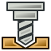

FreeCAD, подобно многим современным приложениям для проектирования, таким как Revit, базируется на концепции верстаков. Верстаки можно рассматривать как набор инструментов, специально сгруппированных под определенные задачи. В традиционных мебельных мастерских, вы имели бы рабочий стол для человека работающего с деревом, другой для работающего с металлическими частями, и, возможно, третий для того, который монтирует все это вместе.
Тоже самое относится и к FreeCAD. Инструменты сгруппированы в верстаки в соответствии с задачами, к которым они относятся.
Когда вы переключаетесь с одного верстака на другой, доступные в интерфейсе инструменты меняются. Панели инструментов, командные панели и, возможно, другие части интерфейса, переключаются на новый инструментарий, но содержание вашей сцены не меняется. Вы могли бы, например, начать рисовать 2D форму в Чертежном инструментарии, а дальше работать над ней в инструментарии Деталей.
Следует отметить, что иногда верстак называют как модуль. Тем не менее, верстаки и модули разные. Модуль это любое расширение FreeCAD, в то время как верстак специальная конфигурация, это группы нескольких панелей инструментов и меню графического интерфейса. Обычно каждый модуль содержит свой собственный верстак, отсюда и пересечение имён.
Встроенные верстаки
Следующие верстаки доступны в каждой установке FreeCAD:
Верстаки
Это базовые верстаки, имеющиеся в каждой установке FreeCAD:
-
 Модуль Arch для работы с архитектурными элементами.
Модуль Arch для работы с архитектурными элементами. -
 Верстак Complete содержит все команды и возможности всех модулей и верстаков, соответствующих некоторым критериям качества.
Верстак Complete содержит все команды и возможности всех модулей и верстаков, соответствующих некоторым критериям качества. -
 Верстак Draft содержит инструменты для двумерного черчения и преобразования их в объёмные тела.
Верстак Draft содержит инструменты для двумерного черчения и преобразования их в объёмные тела. -
 Верстак Drawing для отображения ваших объёмных работ на плоский лист.
Верстак Drawing для отображения ваших объёмных работ на плоский лист. -
 Модуль FEM обеспечивает процесс анализа Методом Конечных Элементов (МКЭ).
Модуль FEM обеспечивает процесс анализа Методом Конечных Элементов (МКЭ).
-
 Модуль Image для работы с растровыми изображениями.
Модуль Image для работы с растровыми изображениями. -
 Модуль Inspection создан, чтобы дать специальные инструменты проверки объёмных тел. Он ещё в стадии проектирования
Модуль Inspection создан, чтобы дать специальные инструменты проверки объёмных тел. Он ещё в стадии проектирования -
 Верстак Mesh для работы с триангулированными сетками (полигиональными моделями).
Верстак Mesh для работы с триангулированными сетками (полигиональными моделями). -
 Модуль OpenSCAD для взаимодействия с OpenSCAD и восстановления истории моделей CSG.
Модуль OpenSCAD для взаимодействия с OpenSCAD и восстановления истории моделей CSG. -
 Модуль Part используется для работы с деталями САПР.
Модуль Part используется для работы с деталями САПР.
-
 Верстак Part Design Для создания деталей из эскизов
Верстак Part Design Для создания деталей из эскизов -  Верстак Path используется для генерации G-кодов управления станками и 3D-принтерами. Появился лишь в версии 0.16 и находится на ранней стадии разработки.
-
 Верстак Plot даёт возможность редактировать и сохранять выходные графики, производимые другими модулями и инструментами.
Верстак Plot даёт возможность редактировать и сохранять выходные графики, производимые другими модулями и инструментами. -
 Модуль Points создан для работы с облаками точек.
Модуль Points создан для работы с облаками точек. -
 Модуль Raytracing используется для для рендеринга с помощью программ трассировки лучей.
Модуль Raytracing используется для для рендеринга с помощью программ трассировки лучей.
{kind=link}
-
 Модуль Reverse Engineering должен дать Вам специальные инструменты для превращения многогранников/тел/сетей в параметрические объекты FreeCAD. Пока в стадии разработки.
Модуль Reverse Engineering должен дать Вам специальные инструменты для превращения многогранников/тел/сетей в параметрические объекты FreeCAD. Пока в стадии разработки. -
 Модуль Robot предназначен для изучения движений роботов.
Модуль Robot предназначен для изучения движений роботов. -
 Верстак Ship предназначен для работы с водоплавающими судами, которые создаются по заданной геометрии.
Верстак Ship предназначен для работы с водоплавающими судами, которые создаются по заданной геометрии. -
 Модуль Sketcher для работы с эскизами с геометрическими ограничениями.
Модуль Sketcher для работы с эскизами с геометрическими ограничениями. -
 Верстак Spreadsheet предназначен для создания и манипуляции данными в электронных таблицах.
Верстак Spreadsheet предназначен для создания и манипуляции данными в электронных таблицах.
-
 Центр запуска позволяет быстро перейти в один из наиболее распространённых верстаков.
Центр запуска позволяет быстро перейти в один из наиболее распространённых верстаков. -
 Верстак TechDraw представляет собой более продвинутый и богатый возможностями наследник верстака Drawing
Верстак TechDraw представляет собой более продвинутый и богатый возможностями наследник верстака Drawing -
 The Test framework is for debugging FreeCAD.
The Test framework is for debugging FreeCAD. -
 Модуль Web предоставляет окно браузера на месте трёхмерного вида внутри FreeCAD.
Модуль Web предоставляет окно браузера на месте трёхмерного вида внутри FreeCAD.
Внешние верстаки
Верстаки FreeCAD легко программируются в Python, поэтому многие разрабатывают дополнительные верстаки вне кодовой базы FreeCAD. Страница внешние верстаки содержит некоторую информацию и учебники насчёт некоторых из них, а проект FreeCAD Addons нацелен на привлечение их и облегчение их установки внутри FreeCAD.
Новые верстаки находятся в стадии разработки, следите за обновлениями!